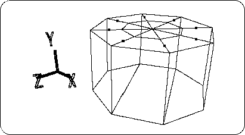
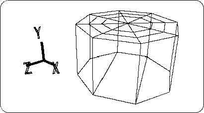
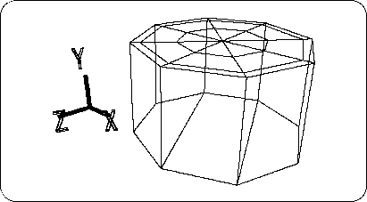
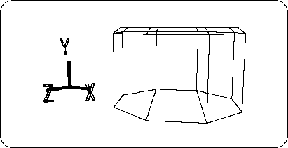
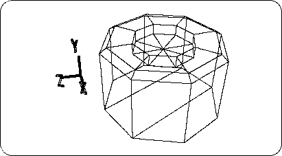
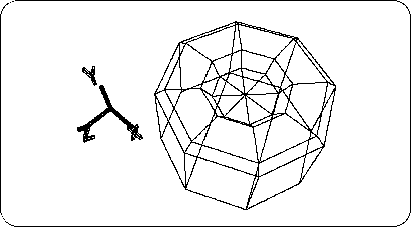
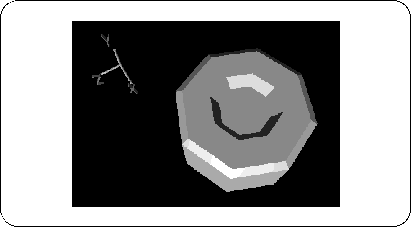

Return to previous page | Return to menu | Go to next page
The bottom surface is the back side of the tire, and the top surface that looks like a front surface is made like a tire. First, as shown in the figure,
[Mesh]-> [Vertex]-> middle mouse button (Add middle vertex)
Then hit the middle point (8 places) (Fig. 3-36).

Next,
[Mesh] → [Edge] → Left mouse button (Add ONE edge)
With, draw a line between the midpoints (Figure 3-37).

Set all the midpoints (8) you just created to TAG ( “T” key + left mouse button surround the points) Make sure you are in TAG mode and select [Scale] so that it is highlighted blue. Press left and right mouse buttons at the same time and drag to expand. (TAG is not removed yet).
As a result, it should be as shown in the figure below (Figure 3-38).

Please attach TAG to all points inside the point where TAG is currently attached (I think it is easy to attach it in the Top window). Once turned on, select the [TransY] icon (currently it should be in TAG mode, please check). Then move in the + Y direction appropriately. It is OK if it looks like the figure below (Figure 3-39).

Next, remove the outermost TAG (8 points).
Then make sure that you are in TAG mode and
[Duplicate] → [Immediate]
Please execute once only.
Click the [TransY] icon, move in the -Y direction, and extrude the surface (Figure 3-40).

Click the tag so that the entire [Scale] icon is highlighted in blue. Then, hold down the left and right mouse buttons at the same time and drag to make the points shrink. It is OK if it looks like the figure below (Figure 3-41).

Remove all TAGs in this state.
First, click Middle Mouse where “SHADE” is displayed at the top right of the Perspective screen. I think it has switched from wireframe display to shade display. (To restore, click Mouse button where “WIRE” is displayed.)
Now, when you look at the shaded screen, you don't think it looks like a polygon.
Where
[Info] → [Selection]
please choose. A window will pop up. Switch from “Automatic Discontinuity” to “Faceted” and click “OK”. Then, the shaded object will appear to “crack” like a polygon (Figure 3-42).

Caution
- Please keep “Faceted” when modeling in the future.
- To make flat shading display → Select “Faceted”.
- To display Gouraud shading → Select “Automatic Discontinuity”.